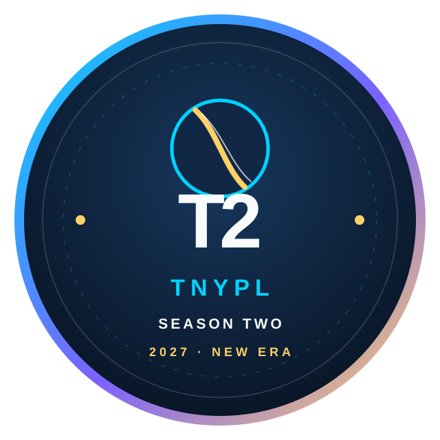

CS
01Chennai Strikers
Speed · Intent · Pressure
Enter world →
ENTERING THE NEW ERATamil Nadu youth franchise cricket, rebuilt for a new season with stronger storytelling, live digital experiences, modern branding and a platform ready for the next generation.
Season Two is designed as a full digital league experience: player discovery, verified registration, transparent drafting, franchise identity, live match storytelling and long-term player visibility.
Each franchise gets its own motion language, colors, identity, squad story, sponsor layer and fan experience.
Speed · Intent · Pressure
Enter world →Control · Patience · Finish
Enter world →Character · Courage · Cricket
Enter world →Built to endure
Enter world →Top-order batter · Chennai
Later this layer can connect directly to Supabase Realtime and YouTube, with player transitions, franchise reactions, draft history and owner-facing controls.
Large editorial venue cards leave room for photography, maps, schedules, match-day information and sponsor overlays.